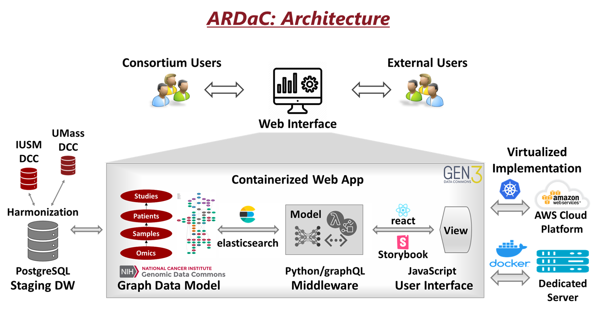

Design of ARDaC
The architecture of the ARDaC system is composed of the following components:
- The ARDaC Data Warehouse. The heterogeneous clinical data, biosample information, and omics data information will be extracted from the randomized clinical trial and other alcohol-associated hepatitis (AH) research projects, standardized according to the ARDaC Data Standard, harmonized according to the ARDaC Common Data Model, and hosted in a central ARDaC Data Warehouse. Specifically, the novel ARDaC Common Data Model is derived from and compatible with the Genomics Data Common (GDC) Data Model and is compliant with the FAIR Principles so that AlcHepNet multimodal data will be findable, accessible, interoperable, and reusable. The ARDaC Data Warehouse is the data source for the ARDaC web application, which is open to the public, as well as for regular reporting and customized services within the AlcHepNet consortium. A graph-based provenance model is used for comprehensive data dependency and version control. The ARDaC digital entities, including the standards, data model, data, metadata, scripts, and codes, are attributable, trackable, and reproducible. ... Read More
- The ARDaC web application. The ARDaC system uses the Gen3 data common framework, which is widely used in NIH-sponsored projects. At the data layer, the standardized and harmonized data is extracted from the ARDaC Data Warehouse and injected into the ARDaC Staging Data Warehouse according to the ARDaC Graph Data Model. In the middleware layer, based on the user's input of the filtering criteria, the graph-based data is queried using GraphQL through the elastic search engine, analyzed with Python, and delivered interactively to users using the JavaScript-based react and Storybook libraries. The ARDaC web application is containerized as a series of images, each providing a specific service. The ARDaC system can be deployed to the AWS cloud services through the Kubernetes platform or to a dedicated server through the Docker platform. By leveraging the GDC common data model and the Gen3 data commons ecosystem, ARDaC enables data integration with other NIH-funded data commons, delivering a broad impact of AlcHepNet research and data to other research communities. ... Read More
